ラオス 観光スポット
カテゴリー
エリア
ビエンチャン
メコン川沿いにたたずむのどかな首都。金色の仏塔とフランス統治時代の建築が同居し、旅の玄関口として1〜2日過ごすのに最適
アクセス
日本からバンコク・ハノイ乗継で約9〜13時間
おすすめ時期
11〜2月（乾季）
宿泊エリア
メコン川沿いエリア
⭐
VTE 01
タート・ルアン
国家的象徴黄金に輝く仏塔がそびえるラオスの国家的象徴。16世紀創建と伝わり、紙幣や国章のデザインにも使われている、ラオス仏教の中心地。
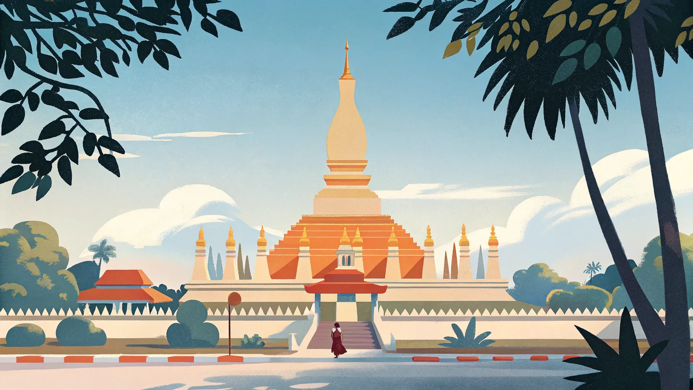
Googleマップ →⭐
VTE 02
ワット・シーサケット
最古の寺院ビエンチャンで最古とされる寺院。回廊には2,000体近い仏像が並び、19世紀のシャム軍侵攻を生き延びた貴重な建築として知られる。
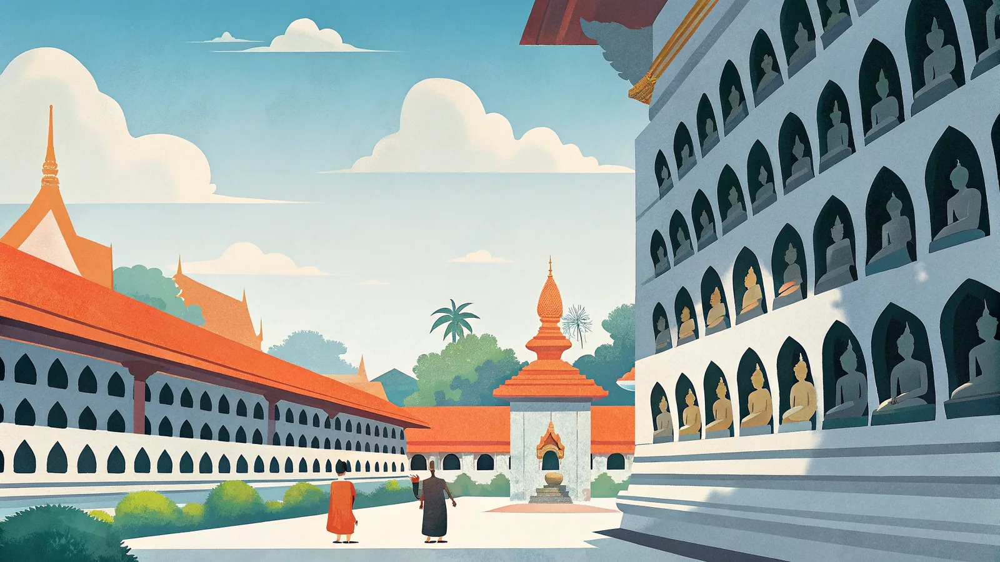
Googleマップ →VTE 03
パトゥーサイ
ラオスの凱旋門パリの凱旋門を彷彿とさせる戦没者慰霊碑。展望台からビエンチャン市街を一望でき、建設資材の転用エピソードが残る逸話も。
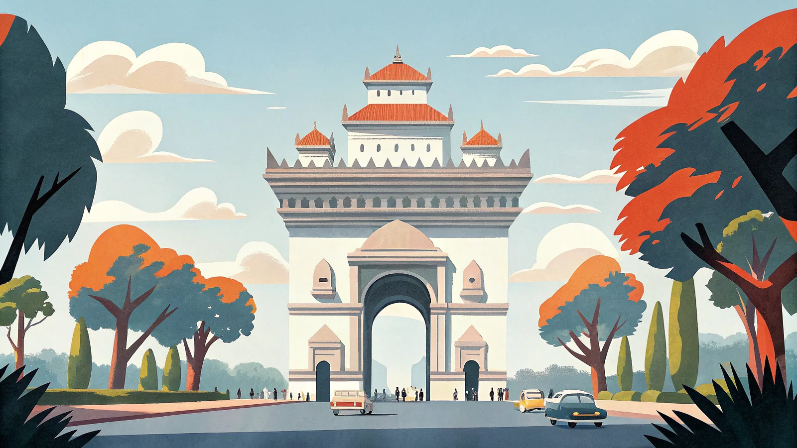
Googleマップ →VTE 04
メコン川ナイトマーケット
夕景×グルメメコン川沿いの遊歩道に毎晩並ぶ屋台市場。衣類・雑貨から屋台グルメまで揃い、川向こうのタイの明かりを眺めながらの散策が心地よい。
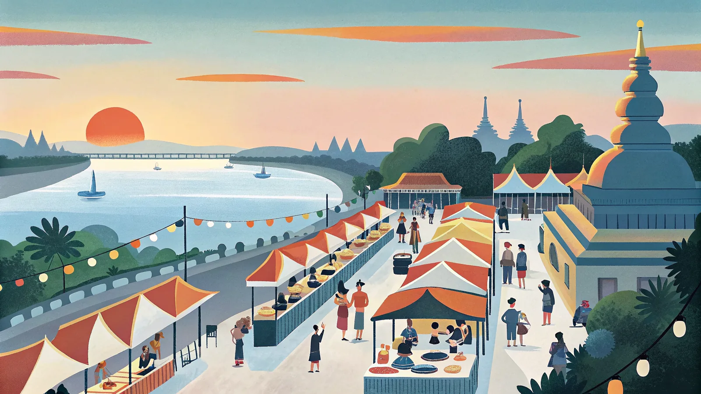
Googleマップ →VTE 05
COPE視覚センター
戦争の歴史を学ぶ内戦・不発弾（UXO）被害者を支援するNGOが運営する資料館。ラオスが「世界で最も爆撃を受けた国」と呼ばれる歴史と、義肢製作の現場を知る貴重な学びの場。
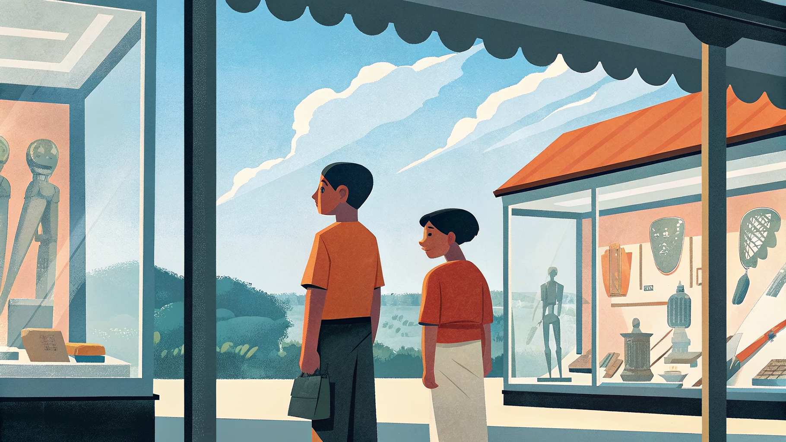
Googleマップ →VTE 06
ブッダパーク（ワット・シエンクワン）
個性派アート奇抜な巨大コンクリート像が広場一面に並ぶ、1958年創設の屋外彫刻公園。仏教とヒンドゥー教が混然一体となった独特の世界観がSNSで人気。
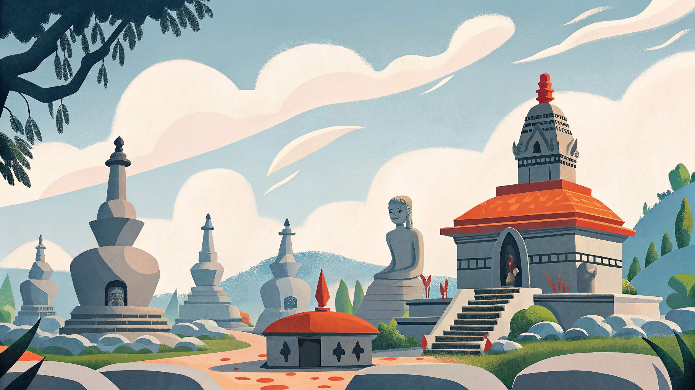
Googleマップ →VTE 07
ホー・プラケオ
旧王室寺院の至宝かつてエメラルド仏を安置していた王室寺院跡の博物館。本尊はバンコクへ持ち去られたが、クメール様式の石彫など仏教美術のコレクションが残る。
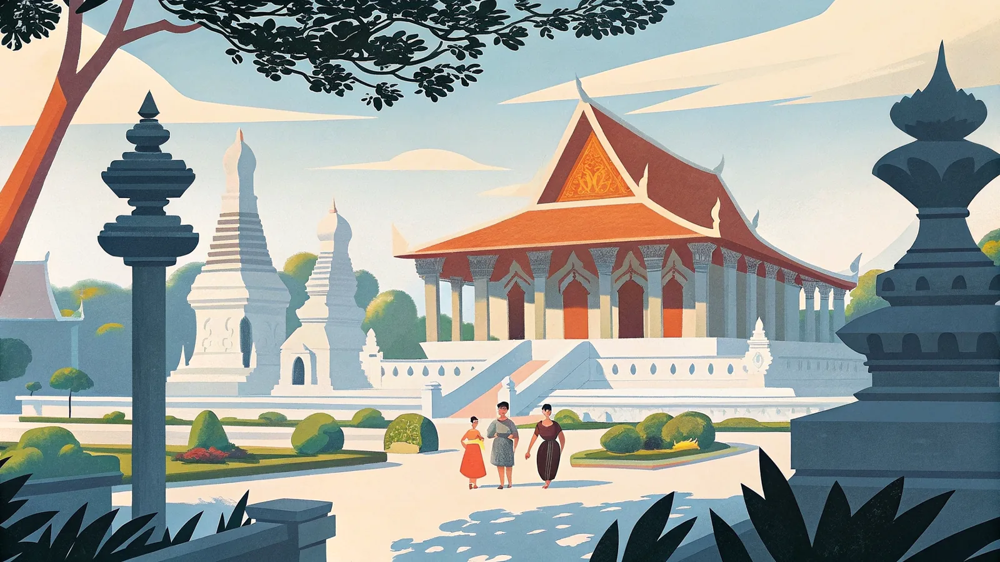
Googleマップ →ルアンパバーン
街ごと世界遺産に登録された古都。早朝の托鉢と黄金の寺院、フランス統治時代の街並みが観光のハイライト
アクセス
ビエンチャンから飛行機約1時間・車約9〜10時間
おすすめ時期
11〜2月（乾季）
宿泊エリア
ルアンパバーン旧市街
⭐
LPQ 01
プーシーの丘
夕日の絶景旧市街中心にそびえる小高い丘。328段の階段を上ると、メコン川とカーン川に挟まれた古都と山並みを一望できる、夕暮れ時の定番ビュースポット。
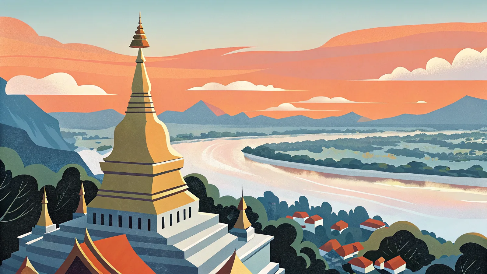
Googleマップ →⭐
LPQ 02
クアンシーの滝
エメラルドの滝エメラルドグリーンの水をたたえた石灰岩の段瀑。天然のプールで泳ぐこともでき、麓にはツキノワグマの保護施設も併設されている、ラオス随一の絶景スポット。
⭐
LPQ 03
ワット・シェントーン
最も美しい寺院「生命の木」のガラスモザイクで彩られた、ラオスで最も美しいとされる王室寺院。優美な曲線を描く屋根はルアンパバーン様式建築の最高傑作と称される。
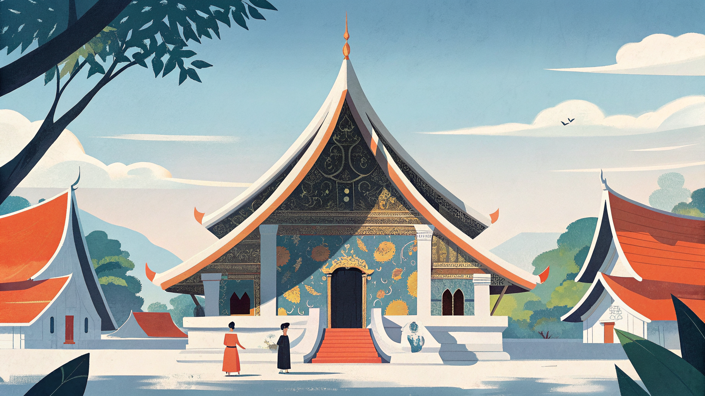
Googleマップ →LPQ 04
托鉢（タンバート）
早朝の神聖な儀式夜明け前、オレンジ色の袈裟を纏った僧侶の列が旧市街の通りを静かに歩き、住民や旅行者からもち米の布施を受け取る神聖な光景。信仰行事として敬意を持って見守りたい。
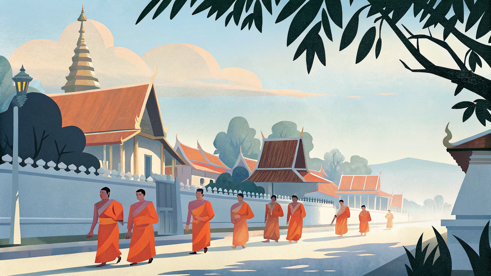
LPQ 05
ルアンパバーン・ナイトマーケット
手工芸品の宝庫旧市街のメインストリートを毎晩埋め尽くす手工芸品市場。少数民族の刺繍布や竹細工、提灯が並ぶランタンの灯りに照らされた通りは、街歩きだけでも楽しい。
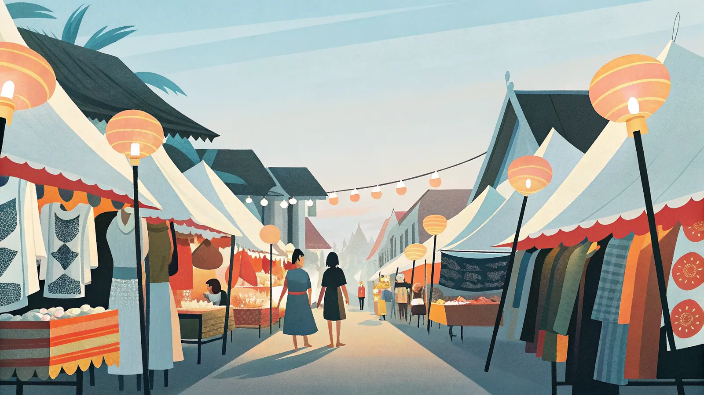
Googleマップ →LPQ 06
王宮博物館（ホーカム）
旧王宮1904年建造の旧ラオス王室の宮殿を利用した博物館。最後の国王一家の私物や黄金の玉座を展示し、仏植民地様式との融合建築も見どころ。
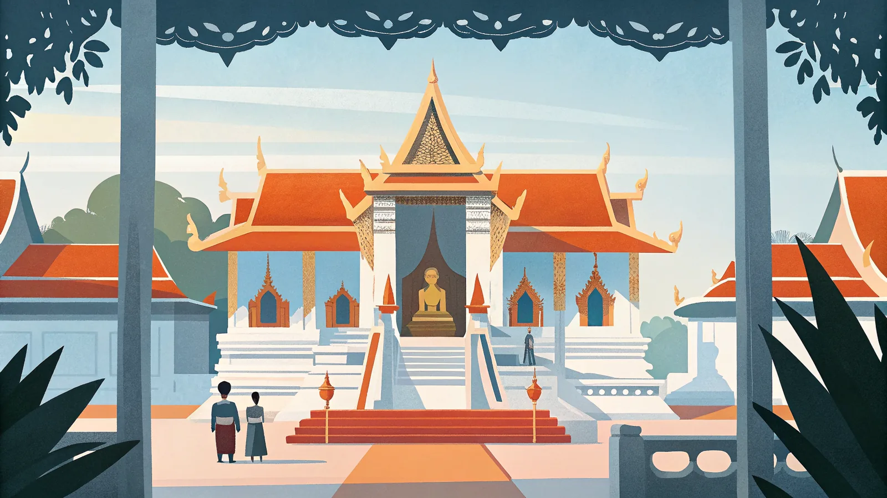
Googleマップ →LPQ 07
パークウー洞窟
仏像で埋め尽くされた洞窟メコン川とウー川の合流点にある2つの洞窟。地元の人々が奉納してきた数千体の仏像が並び、メコン川を遡るボートクルーズで訪れるのが定番。
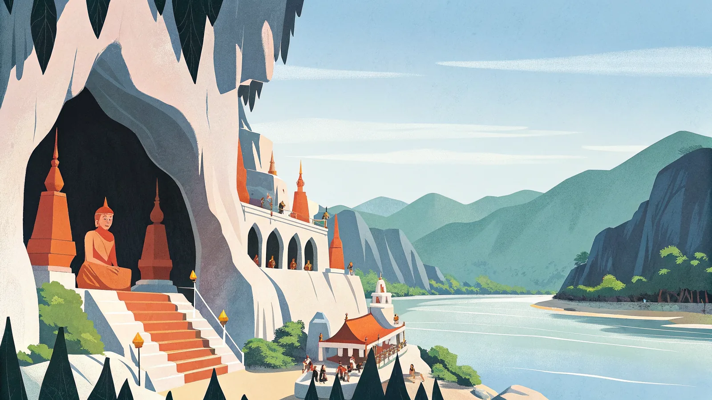
Googleマップ →LPQ 08
クアンシー・ベア・レスキューセンター
滝とセットの保護施設クアンシーの滝の入場ルート沿いにある、密猟や違法飼育から保護されたツキノワグマの保護施設。くつろぐクマを間近で観察でき、滝とセットで訪れる定番コース。
ノーンキアウ
切り立った石灰岩の奇岩に囲まれた、ナムウー川沿いの静かな町。ルアンパバーンに次ぐ人気を集める北部の秘境として近年注目される
アクセス
ルアンパバーンから車・バスで約3時間
おすすめ時期
11〜2月（乾季・雲海が出やすい）
宿泊エリア
ナムウー川沿いのゲストハウス街
⭐
NGK 01
パ・デーン展望台
雲海と奇岩の絶景ハイク急な山道を1時間ほど登った先に広がる、奇岩と雲海の絶景で知られる展望台。早朝は雲海に石灰岩の峰々が浮かぶラオス屈指の絶景に出会える。
NGK 02
ナムウー川クルーズ
秘境の川旅のどかな石灰岩の山々を縫うナムウー川のロングテールボートクルーズ。少数民族の村ムアンゴイへ向かう、北部ラオスならではの川旅体験。
バンビエン
カルスト地形の山々とナムソン川に囲まれたアウトドアの聖地。チュービングやカヤックなどアクティビティが充実
アクセス
ビエンチャンから車・バスで約3〜4時間
おすすめ時期
11〜3月（乾季）
宿泊エリア
ナムソン川沿いエリア
⭐
VVG 01
ブルーラグーン
天然の青い泉石灰岩の岩肌から湧き出る、鮮やかなブルーの水をたたえた天然プール。ロープブランコで飛び込む旅行者の歓声が絶えない、バンビエンの定番アクティビティスポット。
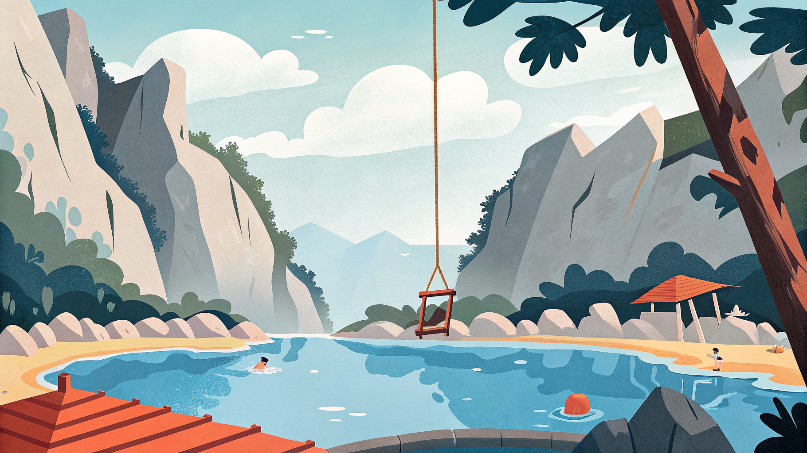
Googleマップ →VVG 02
タムチャン洞窟
絶景鍾乳洞町を見下ろす断崖に口を開ける鍾乳洞。急な階段を上った先の洞窟内部からは、ナムソン川とカルスト山脈を望む絶景が広がる。
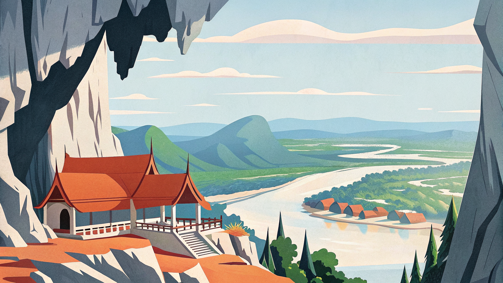
Googleマップ →VVG 03
ナムソン川チュービング
定番アクティビティ浮き輪に乗ってナムソン川をのんびり下る、バンビエン名物のアクティビティ。川沿いのバーで一休みしながら、カルスト山脈を眺める開放感は格別。
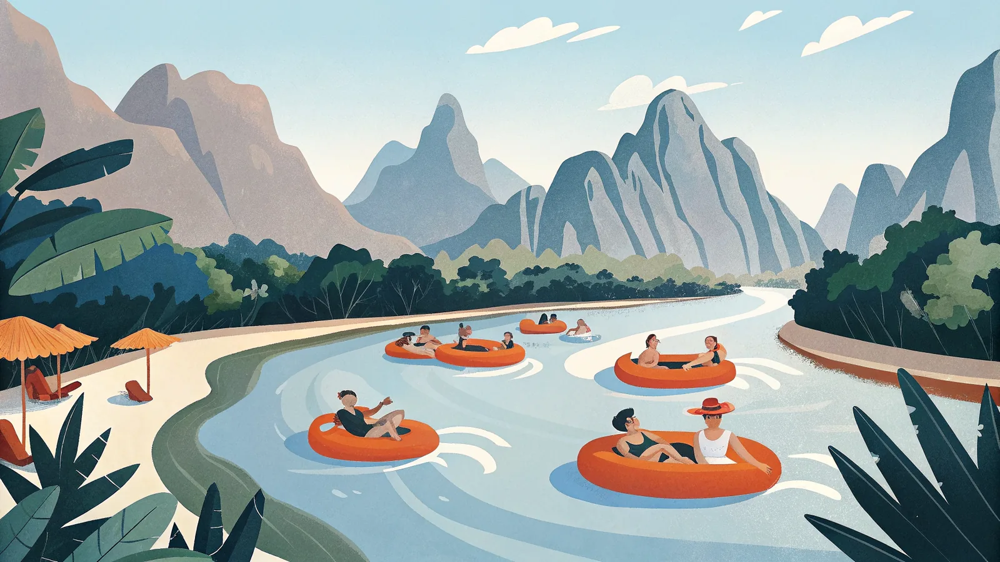
VVG 05
ナムサーン展望台
バイクの奇抜フォトスポット岩山の山頂に据えられたバイクが目印の、SNSで話題になった新定番の展望台。カルスト山脈の絶景とバイクにまたがる奇抜な写真が若者に人気。
シェンクワン（プレーン・オブ・ジャーズ）
無数の石壺が眠る謎多き世界遺産。標高1,200mの高原にあり、内戦時代の不発弾処理の歴史も色濃く残る
アクセス
ビエンチャンから飛行機約45分・車約8〜10時間
おすすめ時期
11〜2月（乾季・防寒具必須）
宿泊エリア
ポーンサワン市街
⭐
XKH 01
プレーン・オブ・ジャーズ サイト1
世界遺産2,000年以上前に作られたとされる巨大な石壺が草原に点在する、謎多き世界遺産（2019年登録）。誰が何の目的で作ったのか、今なお解明されていない古代の遺構。

XKH 02
MAG不発弾処理センター
戦争の歴史を学ぶベトナム戦争時代に投下された不発弾（UXO）の除去活動を行うNGOの展示施設。ラオスが今も抱える戦争の爪痕と、その克服への取り組みを学べる。
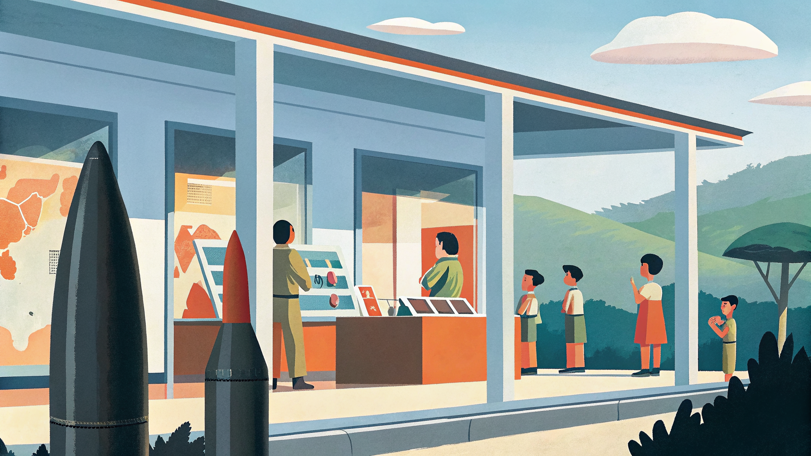
Googleマップ →XKH 03
モン族の織物村
少数民族の手仕事山岳少数民族モン族の伝統的な機織りや藍染めの技術に触れられる集落。色鮮やかな刺繍布は旅の記念にもぴったり。
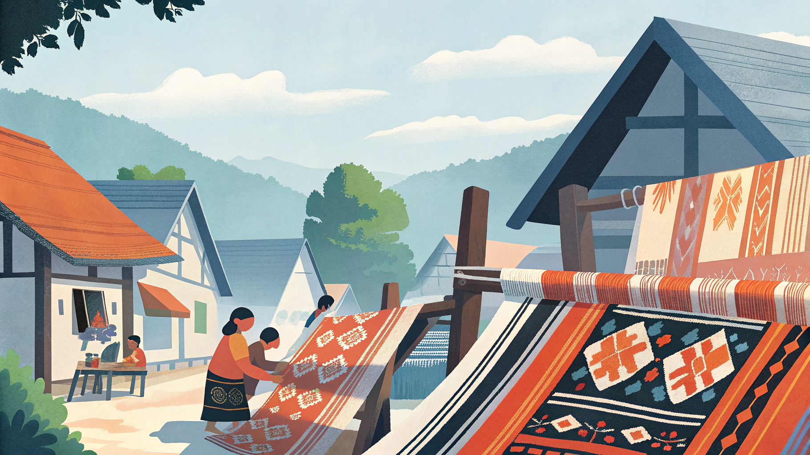
パクセー・南部エリア
ラオス南部の拠点都市。ワット・プーへの入口であり、シーパンドンへ向かう旅行者も必ず経由する南部旅の玄関口
アクセス
ビエンチャンから飛行機で約1.5時間
おすすめ時期
11〜2月（乾季）
宿泊エリア
パクセー市内
⭐
CHX 01
ワット・プー
世界遺産アンコール・ワットより古い歴史を持つ、ヒンドゥー教由来のクメール遺跡。世界遺産で、山の斜面に続く石段と密林に佇む祠堂群が神秘的。
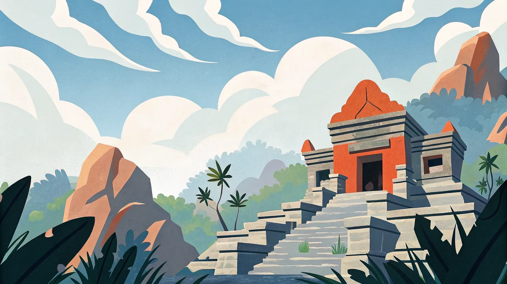
Googleマップ →⭐
CHX 02
タートファーンの滝
落差120mの双子滝ボラベン高原にある落差120mの二条の滝。ジャングルの渓谷へ豪快に流れ落ちる様は迫力満点で、リゾートのテラスから眺めるのが定番。
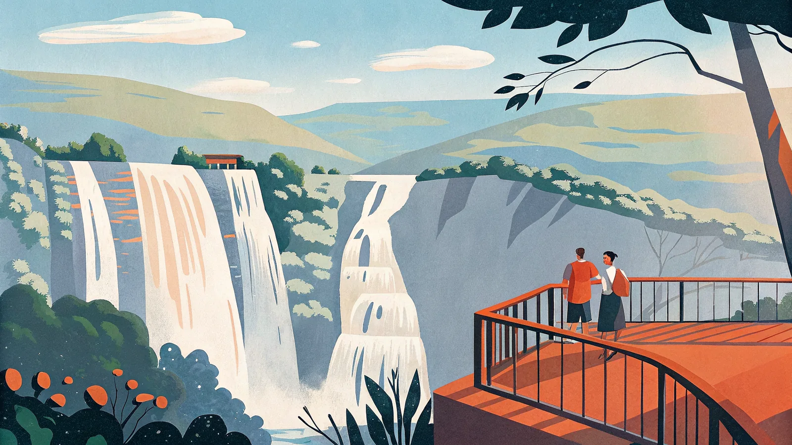
Googleマップ →CHX 03
タートヤーンの滝
泳げる高原の滝パクセーから車で約1時間、ボラベン高原にある高さ42mの滝。滝つぼで泳ぐことができ、複数の展望ポイントから違った表情を楽しめる。
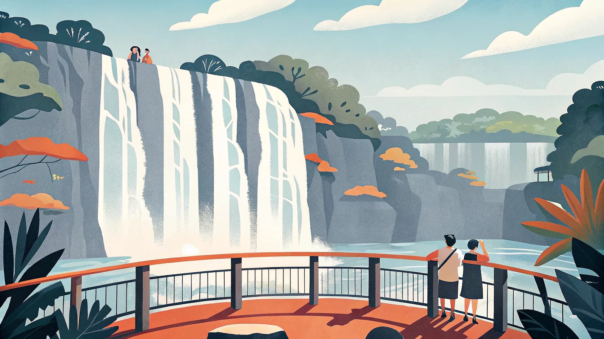
Googleマップ →CHX 04
ボラベン高原コーヒー農園めぐり
コーヒーの一大産地ラオス産アラビカ豆の一大産地ボラベン高原で、農園見学と試飲を楽しむツアー。滝巡りと組み合わせたドライブが定番で、涼しい空気も魅力。
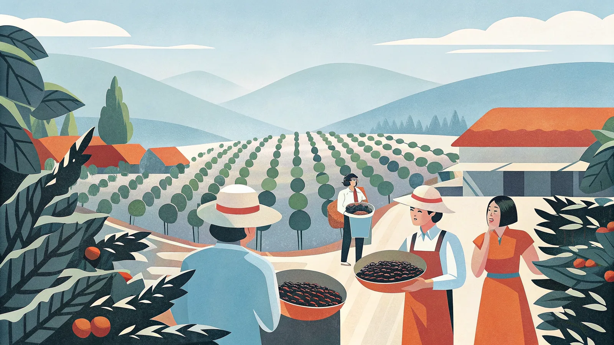
CHX 05
ワット・プー博物館
遺跡巡り前の必見スポット世界遺産ワット・プーの入場口付近にある博物館。出土したクメール美術の彫刻やヒンドゥー神話のレリーフを展示し、遺跡見学前に立ち寄りたい。
シーパンドン（4000の島）
ラオス最南端、メコン川に浮かぶ島々がのんびりとした時間を演出する、バックパッカーに人気の楽園
アクセス
パクセーから車・ボートで約2〜3時間
おすすめ時期
11〜2月（乾季）
宿泊エリア
ドーンデット島
SPD 01
ドーンコーン島
最大の島シーパンドンで最も大きな島。フランス統治時代の建物や田園風景が残り、自転車で島を一周しながらのんびりとした村の暮らしに触れられる。
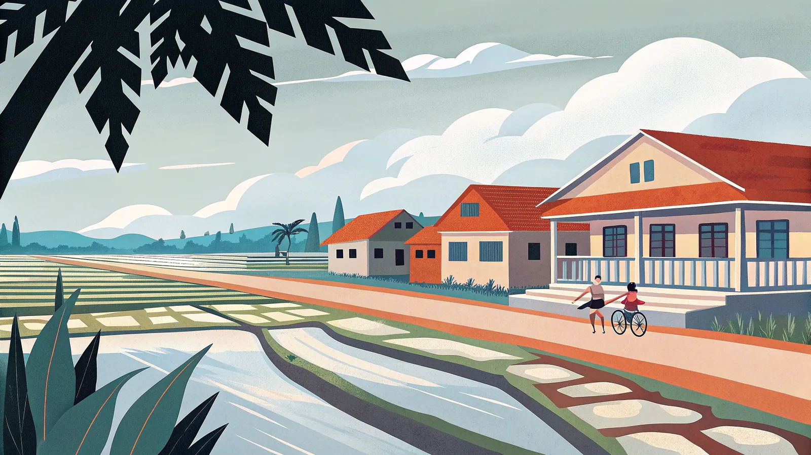
Googleマップ →SPD 02
リーピーの滝
轟音の大瀑布メコン川の水を全て飲み込むかのような轟音を立てる大瀑布。東南アジア最大級の水量を誇り、雨季には特に迫力を増す。
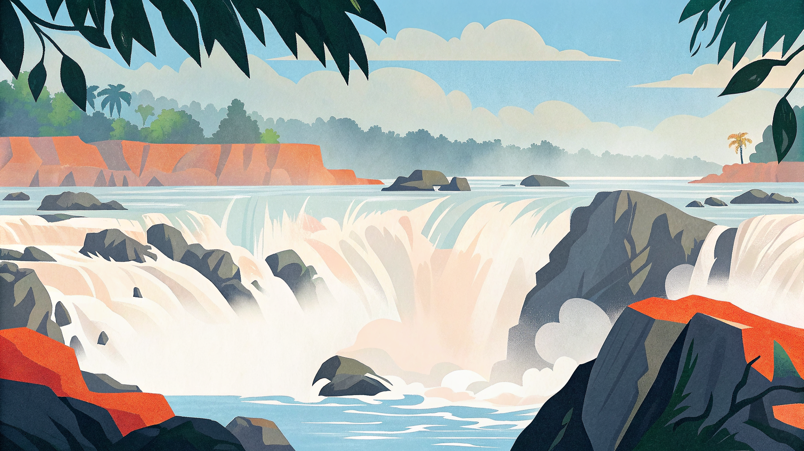
Googleマップ →SPD 04
ドーンデット島の夕日
何もしない贅沢ハンモックに揺られながらメコン川に沈む夕日を眺める、シーパンドン滞在のハイライト。何もしない贅沢を味わう、旅の終盤にふさわしい時間。
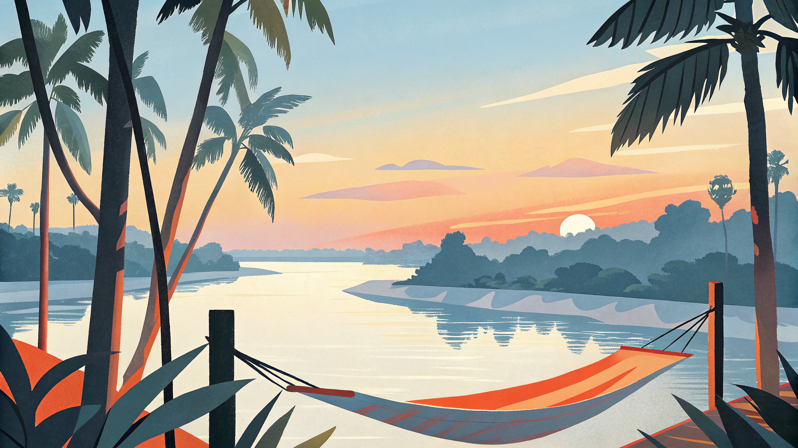
Googleマップ →観光地が決まったら名物グルメもチェック！
各都市の名物料理から定番スイーツ・ドリンクまで。
食べてみたいものをここで探して旅の計画に加えよう。